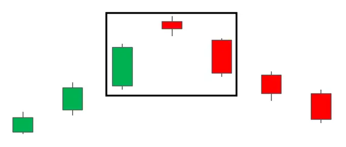
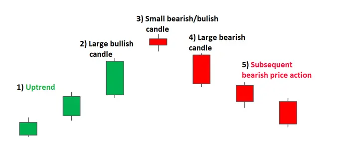
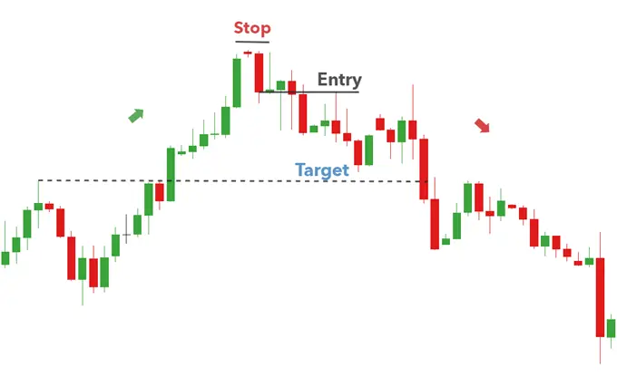
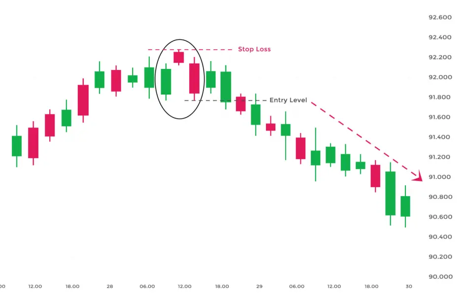

The Evening Star pattern is a three-candle, bearish reversal candlestick pattern that appears at the top of an uptrend. It signals the slowing down of upward momentum before a bearish move lays the foundation for a new downtrend.

| HOW TO IDENTIFY AN EVENING STAR ON FOREX CHARTS |
Identifying the Evening Star on forex charts involves more than simply identifying the three main candles. What is required, is an understanding of previous price action and where the pattern appears within the existing trend.

Traders will often look for signs of indecision in the market where buying pressure subsides and leaves the market somewhat flat. This is the ideal place for a Doji candle to appear.
| HOW TO TRADE THE EVENING STAR CANDLESTICK PATTERN |
The Evening Star pattern can be observed in the EUR/GBP chart below, where there is an established uptrend leading up to the formation of the reversal pattern.
Looking at the chart, once the formation has been completed, traders can look to enter at the opening of the very next candle. More conservative traders could delay their entry and wait to see if price action moves lower. However, the drawback of this is that the trader could enter at a much worse level, especially in fast-moving markets.
Targets can be placed at previous levels of support or previous area of consolidation. Stops can be placed above the recent swing high, as a break of this level would invalidate the reversal. Since there are no guarantees in the forex market, traders should always adopt sound risk management while maintaining a positive risk-to-reward ratio.

When trading the Evening Star on forex markets, the price will very rarely gap like they do with stocks and so the three-candle pattern usually opens very close to the previous closing level.
